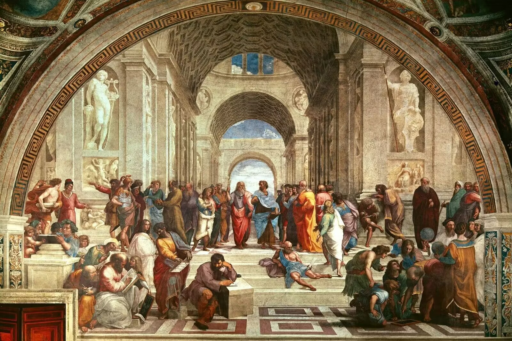
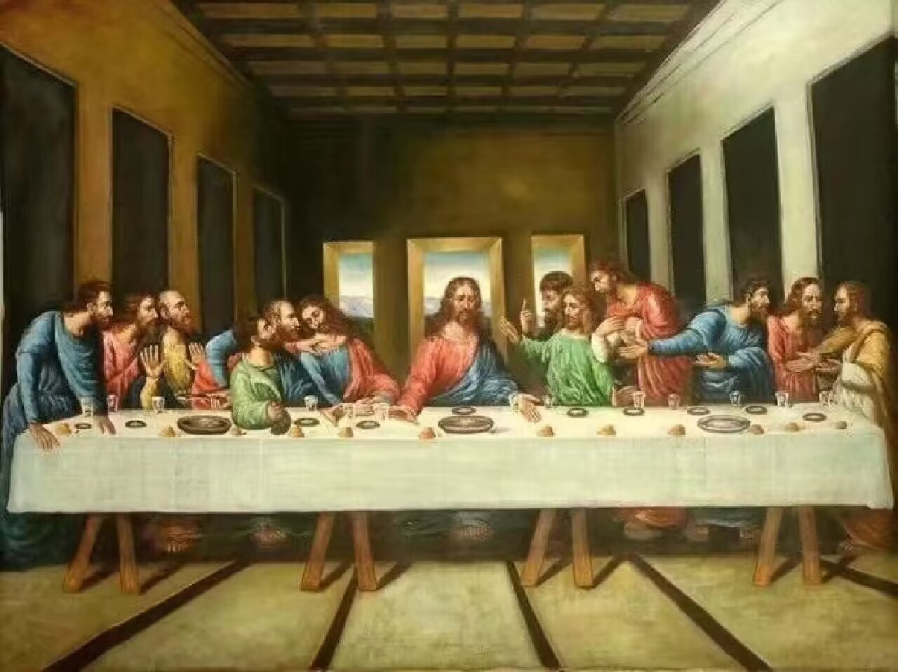
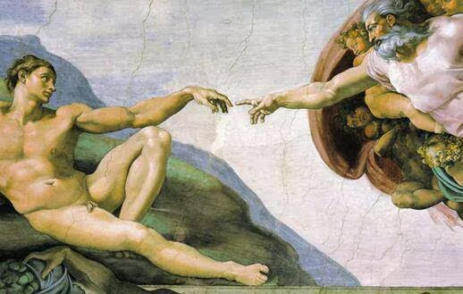
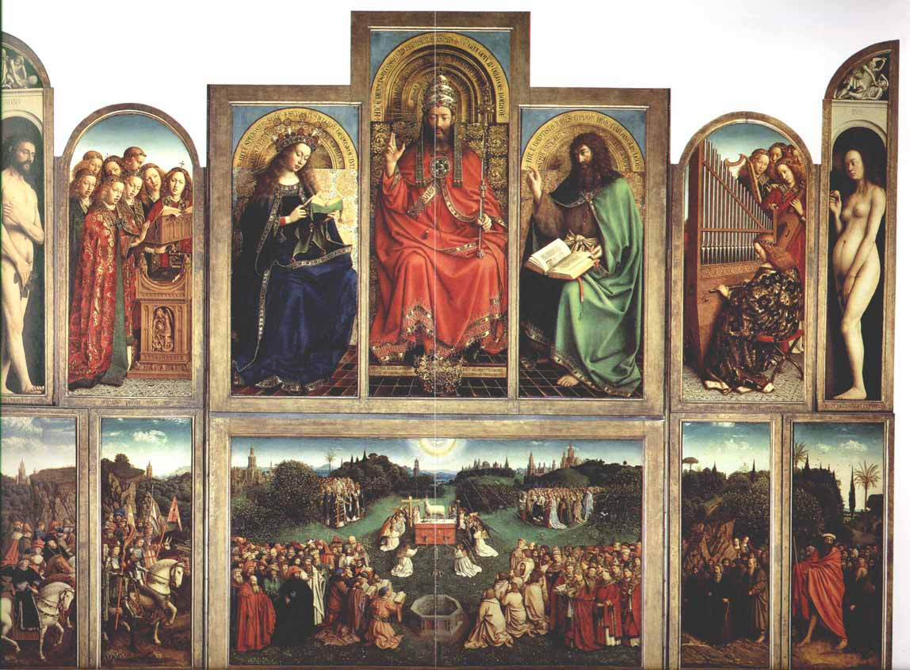
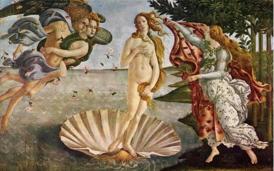

文艺复兴是指发生宅14世纪到16世纪欧洲的一场思想解放文化运动。11世纪后，随着经济复苏与发展，城市的兴起与生活水平的提高，人们逐渐改变了以往对现实的悲观绝望态度，开始了世俗的乐趣。文艺复兴作品是与天主教文化的反抗，借助古希腊和古罗马的形式来表现自己的而文化主张，既是复古也是创新。
| 画作 |
名称 |
作者 |
背景 |
 |
; 《蒙娜丽莎》 |
列奥纳多・达・芬奇 |
蒙娜丽莎是列奥纳多・达・芬奇在1503年或1504年开始创作的油画，应意大利佛罗伦萨富商贾孔多之邀，为其妻子丽莎・贾孔多所作。
达芬奇在1516年，应法国国王佛朗索瓦一世的邀请，从意大利移民法国，在那里他开始继续创作《蒙娜丽莎》，并于1519年，即他去世前不久，最终完成了这幅传世之作。
这幅画主要表现了女性的典雅和恬静的典型形象，塑造了资本主义上升时期一位城市有产阶级的妇女形象，反映了文艺复兴时期人们对于女性美的审美理念和审美追求。 |
|  |
《雅典学院》 |
拉斐尔・桑西 |
《雅典学院》是意大利画家拉斐尔・桑西于1510～1511年创作的一幅壁画作品。现收藏于意大利梵蒂冈博物馆。
该画以古希腊哲学家柏拉图举办雅典学院之逸事为题材，以极为兼容并蓄、自由开放的思想，打破时空界限，把代表着哲学、数学、音乐、天文等不同学科领域的文化名人会聚一堂，以回忆历史上黄金时代的形式，寄托了作者对美好未来的向往，表达了对人类中追求智慧和真理者的集中赞扬，反映的是古典时期学派林立、相互切磋的景象。 |
|  |
《最后的晚餐》 |
列奥纳多・达・芬奇 |
《最后的晚餐》是意大利文艺复兴时期的杰出画家和多面手莱昂纳多・达・芬奇的代表作之一。这幅壁画创作于1495年至1498年间，位于意大利米兰的圣玛利亚・德尔・格拉齐教堂的修道院餐厅墙壁上。这幅作品是受米兰公爵卢多维科・斯福尔扎的委托，为圣玛利亚・德尔・格拉齐教堂的多明我会修道院餐厅所作。《最后的晚餐》描绘的是基督教新约圣经中耶稣与十二门徒共进最后的晚餐的场景，这是基督教传统中非常重要的一个事件，耶稣在此宣告了自己即将被出卖。达芬奇在这幅作品中运用了当时创新的透视技巧和光影处理，使得画面具有强烈的立体感和深度，人物表情和姿态生动，情感表达丰富。 |
|  |
《创造亚当》 |
米开朗基罗 |
《创造亚当》 是米开朗基罗于1511年至1512年创作的西斯廷礼拜堂天顶画，是《创世纪》的一部分。该壁画描绘的是《圣经・创世纪》中上帝创造人类始祖亚当的情形，按照事情发展顺序是创世纪天顶画中的第四幅。作为世界名画之一，后世出现了许多
《创造亚当》的仿作。《创造亚当》是整个天顶画中最动人心弦的一幕，这一幕没有直接画上帝塑造亚当，而是画出神圣的火花即将触及亚当这一瞬间：从天飞来的上帝，将手指伸向亚当，正要像接通电源一样将灵魂传递给亚当。这一戏剧性的瞬间，将人与上帝奇妙地并列起来，触发我们的无限敬畏感，这真是前无古人，后无来者。 |
|  |
《根特祭坛画》 |
凡・埃克兄弟 |
《根特祭坛画》是尼德兰画家凡・埃克兄弟创作于1415-1432年的一幅祭坛组画，由当时的根特市长约克多斯-威德委托绘制。现藏根特・辛特・巴夫大教堂。该画作可以称为世界上第一件真正的油画作品，在绘画史上具有重要的意义。《根特祭坛画》是一种多翼式“开闭形”祭坛组画。这幅祭坛画，乃置放在教堂圣坛的前面，木板组成，由内外共20个画面构成一种折叠式画障。每逢节日的礼拜盛会，祭坛的两翼伴随着音乐旋律被徐徐打开，辉煌夺目的12幅祭坛画便呈现于人们的眼前。在中央下层的一幅是《羔羊的颂赞》，它也是整个组画的核心，是一幅最富戏剧性的横幅面的宗教传说场面。这个题材取自圣经《启示录》第七章第九、十两节： 此后，我观看，见有许多的人。没有人能数过来，是从各国各族各地各方来的，站在宝座和羔羊面前，身穿白衣，手拿棕树枝，大声喊着说：愿救恩归于坐在宝座上我们的神，也归于羔羊。 |
|  |
《维纳斯诞生》 |
桑德罗・波提切利 |
《维纳斯的诞生》是意大利画家桑德罗・波提切利于公元1487年为佛罗伦萨统治者梅第奇家族的一个远房兄弟创作的画布蛋彩画，现藏于意大利佛罗伦萨乌斐齐美术馆。画面所表现的是西西里岛的一个美丽的传说：一片漂亮的大贝壳漂浮在碧波荡漾的海面上，上面站着纯洁而美丽的维纳斯，翱翔于天上的风神轻轻地将贝壳吹到岸边，等候在岸边的春之女神正张开红色绣花斗篷，准备为维纳斯换上新装。维纳斯身材修长，容貌秀美，双眼凝视着远方，眼神充满着幻想、迷惘与哀伤。体现了在佛罗伦萨流行一种新柏拉图主义的哲学思潮：美是不可能逐步完善或从非美中产生，美只能是自我完成，它是无可比拟的，美是不生不灭的永恒。 |
文艺复兴艺术强调人的价值和尊严，关注个人的情感和经历，以及人类在自然界中的地位。文艺复兴艺术家们发展了线性透视法，使得画面具有深度感和三维空间感，这是文艺复兴艺术的一个重要创新。